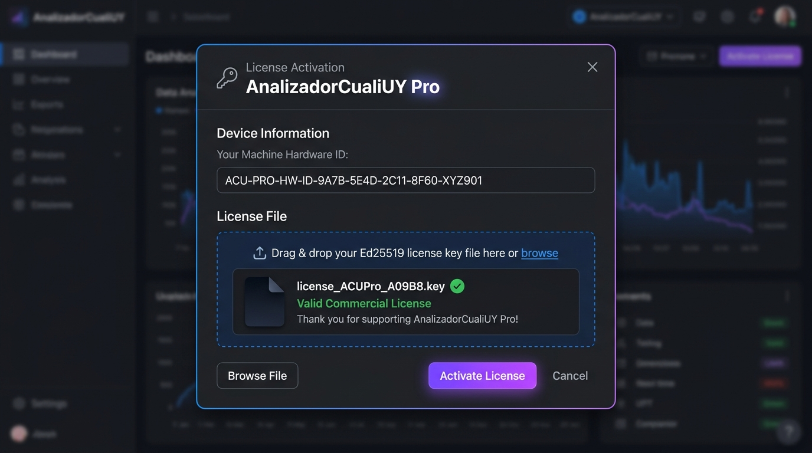
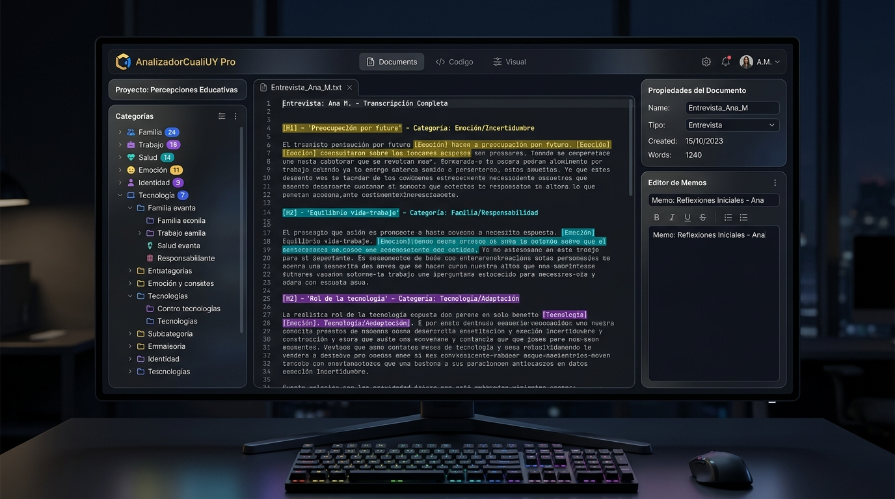
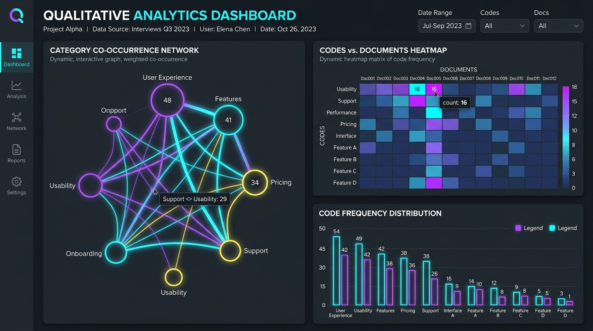
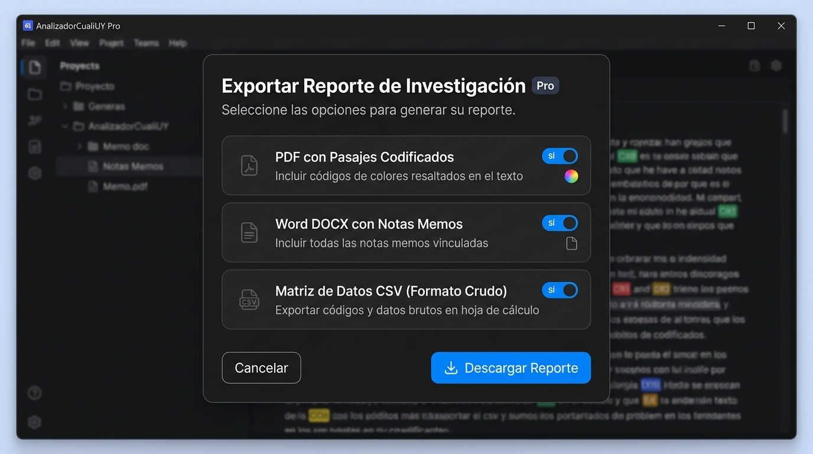

Manual de Usuario Oficial
Guía de uso visual para investigación cualitativa profesional con AnalizadorCualiUY Pro. Codifique, organice y analice sus datos cualitativos en un entorno local y seguro.
Seguridad Local
Sin Nube / 0 Telemetría
Licencia Ed25519
Activación Firmware
Análisis Avanzado
Redes y Matrices
Exportaciones
PDF / DOCX / CSV
Introducción y Primeros Pasos
AnalizadorCualiUY Pro es una herramienta especializada diseñada para investigadores cualitativos, académicos y consultores que exigen la máxima confidencialidad en el tratamiento de entrevistas, grupos focales y documentos de campo.
Crear o Abrir
Inicie un proyecto desde cero o importe un proyecto JSON validado previamente.
Importar Archivos
Cargue entrevistas en formato DOCX, PDF o TXT directamente a la biblioteca local.
Codificar Citas
Seleccione fragmentos de texto y asigne categorías jerárquicas con colores visuales.
Generar Informes
Obtenga matrices de coocurrencia y reportes en PDF/DOCX profesional con un solo clic.
Activación y Licenciamiento Offline
La edición Pro utiliza activación sin conexión a Internet basada en firmas criptográficas Ed25519 asociadas al identificador seguro de su dispositivo (protegido por Windows DPAPI).

Código de Dispositivo
Identificador único generado en base al hardware del equipo. Cópielo con el botón dedicado para enviarlo a emisión.
Carga de Archivo .acuy-license
Arrastre o busque su archivo de licencia provisto por ventas. El sistema verificará la firma asimétrica de forma instantánea.
Estado de Activación
Indicador en tiempo real que muestra el titular, fecha de validez y la firma digital autenticada por el kernel nativo en Rust.
Espacio de Trabajo Principal
La interfaz principal de AnalizadorCualiUY Pro está organizada de forma intuitiva para optimizar el flujo de lectura y codificación activa sin distracciones.

📁 Panel Izquierdo: Documentos y Categorías
Gestiona la biblioteca de documentos importados y el árbol de códigos jerárquico. Permite crear subcategorías con arrastrar o asignando categorías padre.
📝 Panel Central: Lector de Texto
Visualiza el texto de las entrevistas con resaltados de colores configurables según cada categoría asignada. Admite selección rápida de citas.
💬 Panel Derecho: Memos e Inspector
Escriba notas analíticas (memos) vinculadas a pasajes específicos o documentos generales. Ideal para registrar reflexiones metodológicas.
Codificación, Autocodificación y Teclas Rápidas
Para codificar un pasaje, seleccione el texto deseado con el ratón y haga clic en la categoría correspondiente dentro del árbol o use los atajos de teclado asignados.
💡 Sugerencia: Autocodificación Inteligente
Puede definir "Palabras clave" en las propiedades de una categoría. Al usar la opción de autocodificación, el sistema buscará y asignará automáticamente esa categoría a todas las oraciones que contengan dichas palabras clave.
Atajos de Teclado Principales
| Acción | Atajo de Teclado | Descripción |
|---|---|---|
| Buscar en el texto (F3) | Ctrl + F o F3 | Abre la barra de búsqueda rápida y resalta coincidencias. |
| Guardar Proyecto Nativo | Ctrl + S | Fuerza la sincronización atómica del archivo de proyecto en disco. |
| Codificación Rápida | Ctrl + 1 .. 9 | Asigna automáticamente uno de los primeros 9 códigos frecuentes a la selección. |
| Eliminar Cita Seleccionada | Supr / Delete | Remueve el código del pasaje activo manteniendo el texto original. |
Dashboard de Analíticas Cualitativas
AnalizadorCualiUY Pro incorpora un potente motor de cálculo de relaciones entre categorías, frecuencias de codificación, matrices de coocurrencia y gráficos de red interactivos.

🕸️ Gráfico de Red Circular
Visualiza cómo se relacionan los conceptos entre sí. Los nodos representan categorías (tamaño según frecuencia) y las líneas la fuerza de coocurrencia en el mismo párrafo o ventana.
🟩 Matriz Categórica de Coocurrencia
Grilla interactiva tipo Mapa de Calor que cruza Categorías vs Documentos o Categorías vs Categorías para detectar patrones temáticos recurrentes.
Exportaciones e Informes Profesionales
Genere reportes listos para publicación académica o entregables a clientes en formatos estándar: PDF con pasajes pintados, Microsoft Word (DOCX) con tablas de síntesis y archivos CSV para análisis cuantitativo posterior.

⚠️ Protección al Exportar
Las exportaciones en CSV cuentan con protección automática que neutraliza prefijos especiales (como =, +, -) para prevenir la ejecución no deseada de fórmulas al abrirlos en Microsoft Excel o LibreOffice Calc.
Privacidad, Seguridad y Respaldo
Sus datos son de su exclusiva propiedad. La aplicación guarda su estado localmente en la carpeta de usuario de Windows (%LOCALAPPDATA%\uy.santiago.analizadorcuali.pro) y mantiene respaldos automáticos comprobables para evitar cualquier pérdida de trabajo.
Reemplazo Atómico
Escrituras seguras en disco
Aislamiento Total
Sin conexiones a Internet